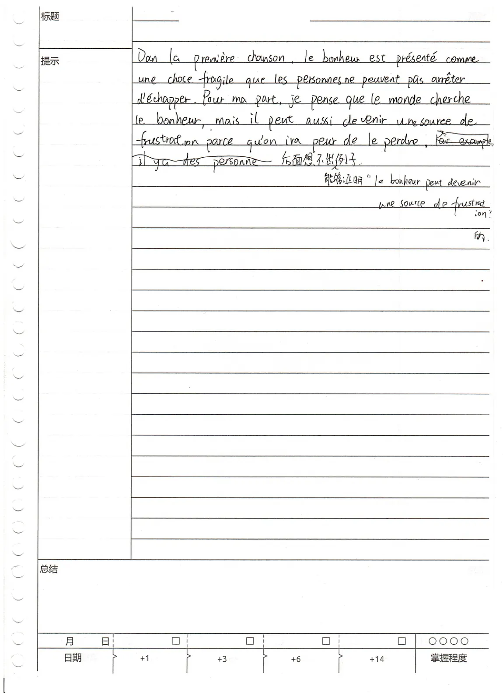

PRODUCTION ÉCRITE · OBSERVATION COLLECTIVE
教学质量周
从五份真实的匿名法语习作出发，观察学习者的写作表现，并讨论哪些认知过程可以从文本中看到、哪些还需要进一步询问学生。
选择一份习作
5 份习作 · 0 份已有记录学生原稿 · S12
匿名原件 · 1 / 5
观察与讨论
QUESTION · S12本份习作的讨论问题
请以原稿为依据，区分能够看到的现象和需要进一步确认的推断。
记录仅保存在本设备浏览器中，不会自动提交至教师或其他网站。共享电脑使用后可清空记录。
S12 · 共同观察之后
从这份习作认识元认知
从原稿中的行为，理解元认知活动
| 可观察现象 | 学生提出“幸福也可能成为挫败感的来源”，试图举例但未能写出具体例证，并在边注中说明想不出能够证明观点的例子。 |
|---|---|
| 元认知知识 | 学生认识到：写作任务要求用具体例证支持所提出的观点。 |
| 元认知监控 | 学生在写作过程中察觉到例证构思遇阻，能够指出自己当前的困难。 |
| 元认知调节 | 原稿可见一次被划去的举例尝试，但尚未形成有效例证。 |
边注清楚呈现了学生对构思困难的觉察；对于写作过程的解释，仍应以原稿中可观察的行为为依据。
进一步理解：元认知知识、监控与调节
元认知指学习者对自身认知活动的认识，以及在任务进行中对这些活动进行监控与调节。以下三个维度是便于课堂分析的综合性框架，并非某一篇文献原样提出的固定三阶段模型。
我知道任务要求什么、自己掌握什么、还可以采用哪些策略。S12 知道论证需要一个支持观点的例子。
我在写作中意识到哪里顺利、哪里受阻。S12 察觉自己在举例环节写不下去。
我根据对困难的认识选择、检验并调整策略。S12 原稿尚未显示出能够解决当前困难的策略；教师可以在此提供支持。
理论依据：Flavell (1979), American Psychologist, 34(10), 906–911；Nelson & Narens (1990), Psychology of Learning and Motivation, 26, 125–173；Schraw & Dennison (1994), Contemporary Educational Psychology, 19(4), 460–475。
S09 · 共同观察之后
从表达中断看元认知调节
已经形成的想法，与尚未完成的法语表达
| 可观察现象 | 学生在法语句子 nous ne pouvons pas restreindre… 处中断，随后转用中文，举出社交媒体上多人拼订豪华酒店房间、轮流拍照的具体例子，并继续展开论证。 |
|---|---|
| 元认知知识 | 中文部分显示学生理解写作任务需要以例证支持观点；但原稿未直接呈现他如何认识自己的法语表达能力及可用策略。 |
| 元认知监控 | 法语表达中断提示可能遇到语言组织困难；学生是否意识到困难究竟来自词汇、句法还是思路组织，原稿没有明确说明。 |
| 元认知调节 | 转用中文继续写作，是可以观察到的表达方式调整；它是否属于学生有意识选择的过渡策略，需要进一步了解。 |
法语未能写完，并不意味着学生没有形成论证思路。我们可以观察到语言转换，却不能直接把这种行为认定为已经成熟的元认知调节。
进一步理解：语言表达困难与策略调节
在二语写作中，构思、语言表达和修订彼此影响。学生可能已经有较具体的想法，却暂时找不到合适的二语资源来表达。判断困难的性质，并据此决定如何继续，才是元认知教学需要帮助学习者逐步发展的能力。
举出拼订酒店、轮流拍照的情境，并解释它与物质欲望之间的关系，体现的是构思与论证活动。
“我没有想出例子”，与“我知道想写什么，但暂时不会用法语表达”，需要采取不同的应对办法。原稿尚不能告诉我们学生是否作过这样的区分。
在明确困难之后，学习者可以有目的地保留原意、调用已学词句、拆分表达，或针对具体语言问题寻求帮助。有效调节需要能够说明选择策略的依据。
理论参照：Flower & Hayes (1981), “A Cognitive Process Theory of Writing”, College Composition and Communication, 32(4), 365–387；Wenden (1998), “Metacognitive Knowledge and Language Learning”, Applied Linguistics, 19(4), 515–537。
S45 · 共同观察之后
从举例到论证的自我监控
找到了例子，是否已经证明了观点？
| 可观察现象 | 学生反对“幸福只来自爱情”的观点，选用居里夫人的科学研究作为例子。但由科研投入与成就，直接推断其私人幸福感及其与爱情的关系，缺少足够依据。 |
|---|---|
| 元认知知识 | 学生知道应以例证支持观点，并组织了“立场—例子—结论”。原稿尚不能确认其是否掌握了检验论据相关性与证据充分性的标准。 |
| 元认知监控 | 原稿尚未显示学生主动复核“这个例子究竟能证明什么”，也未区分可确认的事业事实与对人物个人感受的推断。 |
| 元认知调节 | 原稿未见针对这一论证缺口的进一步修订，尚不能据此认定学生已经有意识地调整了论据或结论。 |
这里观察到的是论证的完成情况。判断推理存在缺口，并不自动说明学生已经对自己的论证过程进行了元认知监控。
进一步理解：论证判断与元认知监控
判断一个例子能否支持观点，需要论证知识；认识自己依据什么选择例子、哪些推断尚无把握，并据此调整论证，则进一步涉及元认知知识、监控与调节。
学生希望说明“幸福不只来自爱情”。科研成就可以作为讨论其他幸福来源的切入点，但不能直接证明居里夫人具体的幸福体验，更不能据此断言她的幸福与爱情无关。
我为什么认为居里夫人的事例能够支持我的观点？哪些内容是可以确认的事实？哪些是我作出的推测？这些问题帮助学习者认识自己推理过程中的不确定之处。
发现依据不足后，学习者可以选择进一步核实材料、限定表述范围，或改用能够充分解释的情境。关键是能够说明为什么作出这样的修订选择。
理论参照：Flavell (1979), “Metacognition and Cognitive Monitoring”, American Psychologist, 34(10), 906–911；Flower & Hayes (1981), “A Cognitive Process Theory of Writing”, College Composition and Communication, 32(4), 365–387。
从习作观察走向AIGC写作教学
S26 · S52 · 回看五份习作设想一个课堂情境：学生把自己的初稿交给生成式人工智能，提出同样的请求——“请帮我把这篇文章改得更好”。
“不断追求更好的汽车”的例子已经切题，但结尾仍停留在重复观点。模型可以帮助修改语言，也可能直接重组论证。
例子与观点基本匹配，原稿主要存在局部语言问题。模型即使给出更流畅的版本，也未必需要学生全部采纳。
- 如果让AI直接改写S26和S52，它可能替学生完成哪些问题诊断与修订决定？两份作品真的需要同样的修改方式吗？
- 再看S12、S09、S45：AI也能生成例子、提供法语表达、重组论证。我们怎样设计人机协作的写作任务，让学生逐步学会自己识别困难、选择求助方式，并说明修订的依据？
讨论的重点由此转向：AI可以帮助完成写作任务，教师如何让学生在获得支持的过程中，仍然有机会练习对自身写作的监控与调节？
以上是供教学研讨的假设情境，不表示这些学生写作时使用过AI。
内容仅保存在当前浏览器，点击上方“导出五份观察记录”时会一并导出。